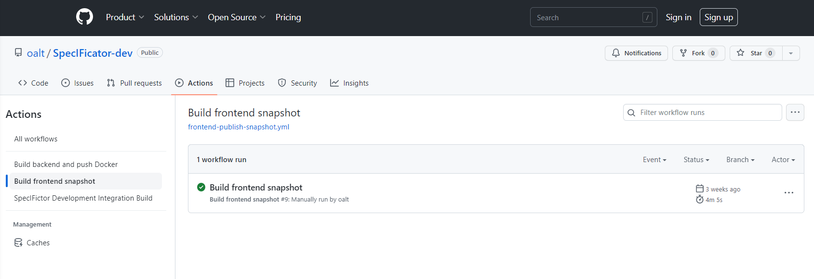

SpecIFicator Download
Frontend
Freigegebene Versionen
Zum Betrieb des SpecIFicator benötigen Sie die Framework-Applikation und das SpecIFicator.DefaultPlugin. Diese müssen getrennt heruntergeladen werden. Die Tabelle unten listet die freigegebenen Versionen auf und zeigt welche Plug-In-Version zu welcher Framework-Applikation passt (gleiche Tabellenzeile).
Wichtig: Sie benötigen immer die Fraemwork-Applikation und ein oder mehrere Plug-Ins für eine erfolgreiche Intstallation des SpecIFicator!
Hinweise zur Installation nach dem Download finden sich im Abschnitt Installation.
| SpecIFicator Framework Applikation (Windows x86) | Passende Plug-In-Freigaben | basierend auf... | ||||||
|---|---|---|---|---|---|---|---|---|
|
|
15.5.2023 | [Download] | [Info] |
|
15.5.2023 | [Download] | [Info] | |
Installation
Entpacken Sie zunächst das SpecIFicator Framework aus der Datei SpecIFicator_<Version> an eine Stelle ihrer Wahl.
Entpacken Sie dann das SpecIFicator Standard-Plug-in aus der Datei SpecIFicator.DefaultPlugin_<Version> und kopieren Sie die Inhalte, also den Ordner SpecIFicator.DefaultPlugin an folgende Stelle:
c:\Users\<YourWindowsUserName>\AppData\Local\SpecIFicator\plugins\
Nun können Sie die Applikation durch Starten des SpecIFicator Frameworks starten. In ihrem Framework-Ordner befindet sich eine ausführbare Datei namens SpecIFicator.exe
Hinweis: Da die Applikation aktuell nicht digital signiert wurde, erscheint beim ersten Start eine Warnmeldung 'Unbekannter Herausgeber'. Diese können Sie durch 'trotzdem ausführen' überschreiben.
Aktueller Arbeitsstand aus der Entwicklung
Den aktuellen Stand der Entwicklung des SpecIFicator Framewok und des SpecIFicator Default Plug-in können Sie direkt als Ergebis des aktuellen Build-Standes herunterladen (Frontend snapshot build).
Download SpecIFicator Frontend Snapshot Build für Windows
Klicken Sie dazu auf den obersten erfolgreichen Build in der angezeigten Liste:

Scrollen Sie nun auf der erscheinenden Seite nach unten. Sie finden unter 'Artifacts' zwei Dateien zum
Download. Beispielsweise:
Laden Sie beide herunter. Die Daten sind aus technischen Gründen doppelt gepackt. Das heisst, dass Sie sie auch doppelt entpacken müssen.